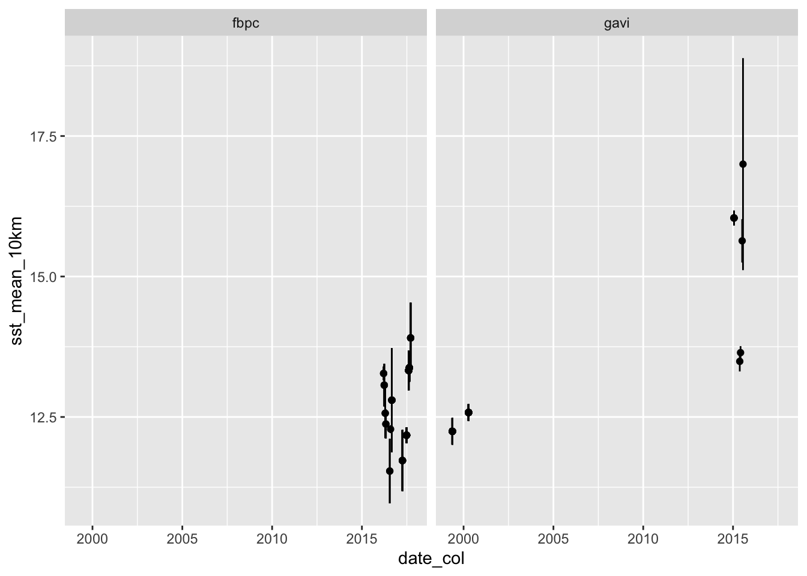

library(tidyverse) # general cleaning and use
library(here) # helps organize files
library(readxl) # reads in excel files
library(janitor) # helps clean up data framesUrchin environmental data
General info
This document is set up into 3 different sections: 1. set up, 2. cleaning, and 3. getting the date window. At each step of the way, there’s some intermediate data frame created to get to the final product. I’m mostly making the assumption that you do want to see these intermediate steps (I often do, just to get a gut check that what I’m doing gives me what I expect), but there are definitely ways to streamline this if you don’t want to use that structure.
In any case, this document takes the ZOE_RS_Data.xlsx in its entirety and runs through the cleaning/wrangling steps before getting to the last part, where you choose the time window and can either get a data frame with all the environmental conditions for all the dates within the window (not summarized, just raw) for both sites at all 4 spatial scales, or you can continue on and summarize all those values by site by scale to get mean and variance for each.
The TL;DR version (no explaining, just code) is here.
1. Set up
a. packages
b. data
sst <- read_xlsx(here("data", "ZOE_RS_Data.xlsx"), sheet = "SST", na = c("NA", "NaN"))
no3 <- read_xlsx(here("data", "ZOE_RS_Data.xlsx"), sheet = "NO3", na = c("NA", "NaN"))
npp <- read_xlsx(here("data", "ZOE_RS_Data.xlsx"), sheet = "NPP", na = c("NA", "NaN"))
chl <- read_xlsx(here("data", "ZOE_RS_Data.xlsx"), sheet = "CHL", na = c("NA", "NaN"))
urchins <- read_csv(here("data", "allUrchins_working_saved on 20230302.csv"))2. cleaning
a. cleaning each environmental data set
i. cleaning function
Cleaning steps are going to repeat for sst, no3, npp, and chl data frames, so writing a function here to make it a little faster:
cleaning_fxn <- function(type) {
# function set up part 1: choose the right data frame based on the "type" ----
df <- if(type == "sst") {
sst
} else if(type == "no3") {
no3
} else if(type == "npp") {
npp
} else if(type == "chl") {
chl
} else {
warning("Did you provide a data type? Double check!")
return(NA)
}
# function set up part 2: create a label for the column of values based on the data type ----
label <- if(type == "sst") {
"sst_c"
} else if(type == "no3") {
"no3_umol_l_1"
} else if(type == "npp") {
"npp_mg_c_m_2_d_1"
} else if(type == "chl") {
"chl_mg_m_3"
} else {
warning("Did you provide a data type? Double check!")
return(NA)
}
# what the actual function does ----
# takes the data frame name as an argument and then
df %>%
# makes column names easier to parse using function from {janitor} and then
clean_names() %>%
# removes the "units" column because the units are going into the value column label and then
select(!(contains("units"))) %>%
# puts the data frame into "tidy" format, where each row is an observation and then
pivot_longer(cols = f_10:g_100, names_to = "name", values_to = label) %>%
# separates the column with site_scale into two separate columns and then
separate_wider_delim(cols = name, delim = "_", names = c("site", "scale_km")) %>%
# makes an "observation ID": some information that allows you to uniquely identify each observation
unite("obs_ID", year, month_s, day_s, site, scale_km, remove = FALSE)
}ii. using the function
Put into practice:
sst_clean <- cleaning_fxn("sst")
no3_clean <- cleaning_fxn("no3")
npp_clean <- cleaning_fxn("npp")
chl_clean <- cleaning_fxn("chl")And looking at the first 5 rows of the sst_clean data frame just to double check it all worked:
head(sst_clean, 5)# A tibble: 5 × 11
obs_ID year doy_s doy_e month_s day_s month_e day_e site scale_km sst_c
<chr> <dbl> <dbl> <dbl> <dbl> <dbl> <dbl> <dbl> <chr> <chr> <dbl>
1 1981_9_3_f… 1981 246 250 9 3 9 7 f 10 11.2
2 1981_9_3_f… 1981 246 250 9 3 9 7 f 25 11.3
3 1981_9_3_f… 1981 246 250 9 3 9 7 f 50 11.3
4 1981_9_3_f… 1981 246 250 9 3 9 7 f 100 11.7
5 1981_9_3_g… 1981 246 250 9 3 9 7 g 10 17.5b. combining data frames
Note
There is an odd date in SST and NO3: 2016-03-21 has multiple values?
The rationale for combining each data frame for sst, chl, no3, and npp into one is that you can then find the window for each urchin once, as opposed to doing it 4 different times for the 4 conditions. Also, then you can look at a single date and say what the environmental conditions were for that date, figure out if any measurements are missing for that date, etc. Doing that below:
# create a data frame called env_full starting with sst_clean
env_full <- sst_clean %>%
# select only columns of interest
select(obs_ID, sst_c) %>%
# joining ----
# selecting columns of interest from no3_clean (only observation ID and the value)
# joining with sst_clean
full_join(select(no3_clean, obs_ID, no3_umol_l_1),
# setting this relationship because of the multiple values thing
relationship = "many-to-many",
# joining both data frames by the obs_ID column
by = "obs_ID") %>%
# selecting columns of interest from npp_clean and joining
full_join(select(npp_clean, obs_ID, npp_mg_c_m_2_d_1),
by = "obs_ID") %>%
# selecting columns of interest from chl_clean and joining
full_join(select(chl_clean, obs_ID, chl_mg_m_3),
by = "obs_ID") %>%
# getting the metadata ----
# separating the obs_ID column into the meaningful components
separate_wider_delim(cols = "obs_ID", delim = "_",
names = c("year", "month_s", "day_s", "site", "scale_km")) %>%
# creating a column for date by combining year, month_s, day_s
unite("date", year, month_s, day_s, sep = "-") %>%
# general cleaning ----
# making sure the date is actually read as a date
mutate(date = as_date(date),
# replacing the site abbreviations with full site names
site = case_when(
site == "f" ~ "fbpc",
site == "g" ~ "gavi"
),
# making sure the scales are categories in numerical order
scale_km = fct_relevel(as_factor(scale_km), "10", "25", "50", "100")) %>%
# arranging the whole data frame by date to make it easier to parse
arrange(date)As a random sample of rows:
slice_sample(env_full, n = 5)# A tibble: 5 × 7
date site scale_km sst_c no3_umol_l_1 npp_mg_c_m_2_d_1 chl_mg_m_3
<date> <chr> <fct> <dbl> <dbl> <dbl> <dbl>
1 2010-01-01 fbpc 100 11.7 9.24 483. 0.963
2 2016-01-31 fbpc 25 12.1 6.34 551. 0.861
3 1995-07-10 gavi 25 14.9 1.47 NA NA
4 2004-03-01 fbpc 50 11.2 12.3 639. 1.13
5 1995-05-31 gavi 25 13.1 2.41 NA NA c. cleaning urchin data set
Just trying to get the most relevant info here for urchin environmental data: Inv_ID, date_col, and site.
urchin_clean <- urchins %>%
# selecting columns of interest
# select(Inv_ID, date_col, site) %>%
# making sure the date column is parsed as a date and is in the right format
mutate(date_col = mdy(date_col))3. getting the date window
# function to get the date window ----
get_window <- function(date, size) {
# choosing a start and end ----
# start: just whatever the date is minus the size of the window you choose
start <- as_date(date) - size
# end: the date you choose
end <- as_date(date)
# filtering the data frame ----
# use the full data frame
env_full %>%
# filter the data frame to only include dates that are equal to or after the start and equal to or before the end
filter(date >= start & date <= end) %>%
# label the window size
mutate(window_size = size)
}
# function to get the window summary ----
window_summary <- function(df) {
df %>%
# grouping the data frame by site and scale_km
# important! this function assumes the data frame has those two columns named these things
# if not, it might not work!
group_by(site, scale_km) %>%
# summarizing ----
summarize(sst_mean = mean(sst_c, na.rm = TRUE),
sst_var = var(sst_c, na.rm = TRUE),
sst_n = sum(!is.na(sst_c)),
no3_mean = mean(no3_umol_l_1, na.rm = TRUE),
no3_var = var(no3_umol_l_1, na.rm = TRUE),
no3_n = sum(!is.na(no3_umol_l_1)),
npp_mean = mean(npp_mg_c_m_2_d_1, na.rm = TRUE),
npp_var = var(npp_mg_c_m_2_d_1, na.rm = TRUE),
npp_n = sum(!is.na(npp_mg_c_m_2_d_1)),
chl_mean = mean(chl_mg_m_3, na.rm = TRUE),
chl_var = var(chl_mg_m_3, na.rm = TRUE),
chl_n = sum(!is.na(chl_mg_m_3)),
.groups = "keep"
)
}Testing it out. In this example, an urchin was collected on 2019-03-15, and the size of the window you want is 30 days.
test_df <- get_window(date = "2019-03-15", size = 30)And then a look at that:
head(test_df, 10)# A tibble: 10 × 8
date site scale_km sst_c no3_umol_l_1 npp_mg_c_m_2_d_1 chl_mg_m_3
<date> <chr> <fct> <dbl> <dbl> <dbl> <dbl>
1 2019-02-15 fbpc 10 12.2 6.01 713. 1.25
2 2019-02-15 fbpc 25 12.2 5.68 662. 1.13
3 2019-02-15 fbpc 50 12.2 5.61 606. 0.989
4 2019-02-15 fbpc 100 12.2 5.88 534. 0.861
5 2019-02-15 gavi 10 14.0 0.672 1042. 1.58
6 2019-02-15 gavi 25 14.0 0.682 1042. 1.79
7 2019-02-15 gavi 50 13.9 0.804 951. 1.53
8 2019-02-15 gavi 100 13.9 0.853 804. 1.13
9 2019-02-20 fbpc 10 11.8 7.99 709. 1.11
10 2019-02-20 fbpc 25 11.8 7.99 669. 1.01
# ℹ 1 more variable: window_size <dbl>Getting the summary of environmental conditions within that window:
test_summary <- window_summary(test_df)
test_summary# A tibble: 8 × 14
# Groups: site, scale_km [8]
site scale_km sst_mean sst_var sst_n no3_mean no3_var no3_n npp_mean npp_var
<chr> <fct> <dbl> <dbl> <int> <dbl> <dbl> <int> <dbl> <dbl>
1 fbpc 10 11.6 0.124 6 9.48 5.39 6 736. 5979.
2 fbpc 25 11.6 0.126 6 9.34 5.50 6 727. 6579.
3 fbpc 50 11.6 0.125 6 9.37 5.40 6 674. 7680.
4 fbpc 100 11.6 0.114 6 9.45 4.95 6 643. 15577.
5 gavi 10 13.4 0.171 6 1.86 0.702 6 2128. 2479548.
6 gavi 25 13.4 0.169 6 1.87 0.691 6 1982. 1592730.
7 gavi 50 13.4 0.119 6 1.75 0.522 6 1449. 560626.
8 gavi 100 13.5 0.0692 6 1.51 0.270 6 1005. 122405.
# ℹ 4 more variables: npp_n <int>, chl_mean <dbl>, chl_var <dbl>, chl_n <int>4. getting urchin data
a. general explanation
I’m taking this as an opportunity to introduce list-columns which are a bit abstract to explain but for which I am a data science evangelist. This is in large part because I am not good at writing functions lol so I have to do this.
The way I see your data, you have a data frame (urchins) with all your urchin Inv_IDs, the date they were collected, and the site. These are important for figuring out which site and/or which windows to use from the environmental data frame. However, each urchin has its own site and collection date, meaning it’ll have its own environmental data frame, and therefore its own environmental data summary (e.g. mean SST over the course of 30 days).
You could get the window and calculate summary stats for each individual urchin, either by copy-pasting code (RIP no) or writing a for loop (a pain in the ass). Alternatively, you could use list-columns, which allow you to circumvent the for loop technique to iterate functions over a whole column without having to mess with the confusing structure of a loop. List-columns essentially create data frames within data frames so that you can use the same {tidyverse} syntax to apply functions to multiple data frames.
Sidebar: IMO
for loops are useful if the output of one iteration of the loop dictates the next. If not, there are simpler solutions (like a nested column structure)The help page for nest() explains this pretty well, I think!
b. list-columns in practice
This is best seen in the code when you’re running it on your own computer. What we’ll do is:
1. take a data frame
2. create list-columns (i.e. data frames within a data frame) using nest() from the {tidyr} package
3. apply functions to the resulting data frames using dplyr::mutate() and purrr::map(). You’ll create a new column using mutate() (essentially creating a new column of data frames) and map() to manipulate data frames.
I highly recommend running this line by line and seeing how the data frame changes with each piped function!! If you use View() on the data frame, you’ll see each of these data frames pop up in the columns. If you click on them, you’ll see everything in the data frame.
i. map()
The syntax for map() is a little confusing but it basically takes the form:
map(data frame, ~ function(.x, arguments using data frame columns))The .x refers to the data frame that you name as the first argument in map(). In the context of list-columns, you’re basically telling R: 1. use the function map()
2. look specifically at this data frame
3. do this function on the data frame that you already called up (.x)
Sorry this is a bad explanation!!! But I promise that if you look at the data frame(s) it will be less esoteric.
c. trying it out
In this scenario, you’re trying out different windows (30 or 60 days). You want to see all the observations for that window and also summarize the environmental variables for that window.
env_summary <- urchin_clean %>%
# turning this into a nested data frame ----
nest(data = everything(), .by = Inv_ID) %>%
# getting the 30 day and 60 day windows ----
mutate(window_30 = map(data,
# using the `get_window()` function from up top
# using `pull()` to get the date out of the `data` data frame as a vector
~ get_window(date = pull(.x, date_col), size = 30) %>%
# filter the data frame to only include observations from the site at which the urchin was collected
filter(site == pull(.x, site))),
# doing this all again except for the 60 day window
window_60 = map(data,
~ get_window(date = pull(.x, date_col), size = 60) %>%
filter(site == pull(.x, site)))) %>%
# calculating the mean and variance for each window ----
mutate(window_30_summary = map(window_30,
~ window_summary(.x)),
window_60_summary = map(window_60,
~ window_summary(.x))
)Hypothetical scenario: after looking at all the windows/making a decision, you decide to maybe go with the 30 day window at the 10km scale. You can use unnest() to expand the data frame, then continue manipulating it like any other data frame.
env_30day_10km <- env_summary %>%
# select only the individual ID and the 30 day window summary
select(Inv_ID, window_30_summary) %>%
# expand the summary data frames
unnest(cols = c(window_30_summary)) %>%
# filter data frame to only include 10km scale
filter(scale_km == 10) %>%
# rename the environmental columns to include the scale
rename_with(~paste0(., "_10km"), sst_mean:chl_n) %>%
# remove the scale column (now redundant because the column names have the scale in them)
select(-c(scale_km, site)) %>%
# join with the cleaned urchin data set so that each observation now has environmental data attached
left_join(urchin_clean, ., by = "Inv_ID")Then just to test this out, going to plot the date an urchin was collected with the mean and variance of SST for the 30 day window at 10km.
ggplot(data = env_30day_10km, aes(x = date_col, y = sst_mean_10km)) +
geom_linerange(aes(ymin = sst_mean_10km - sst_var_10km, ymax = sst_mean_10km + sst_var_10km)) +
geom_point() +
facet_wrap(~site)